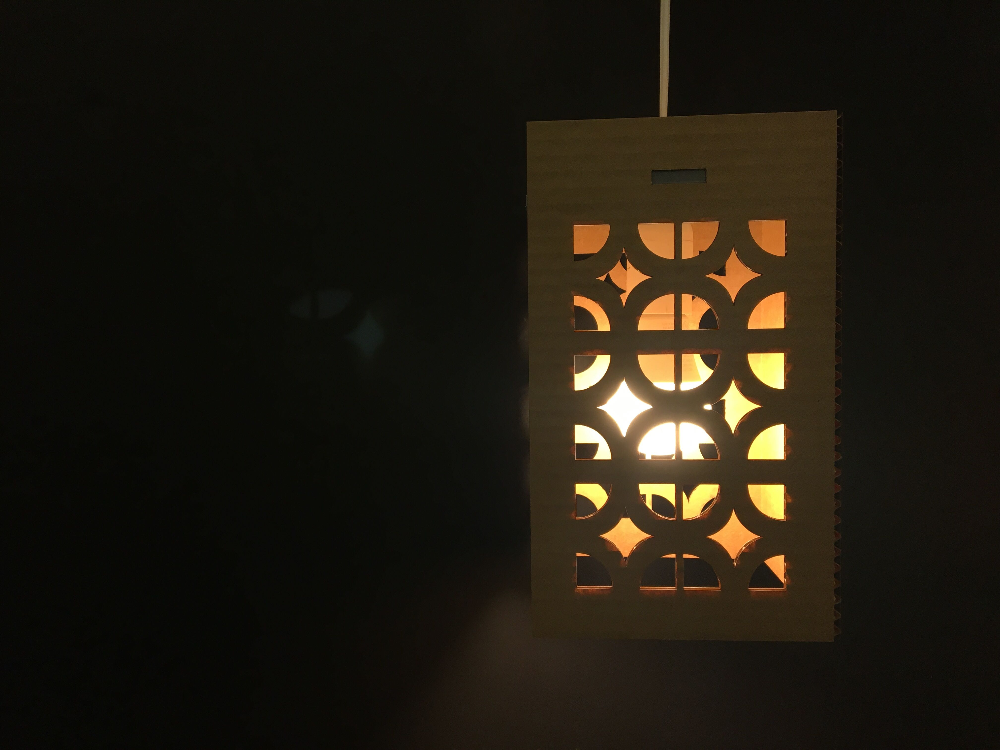
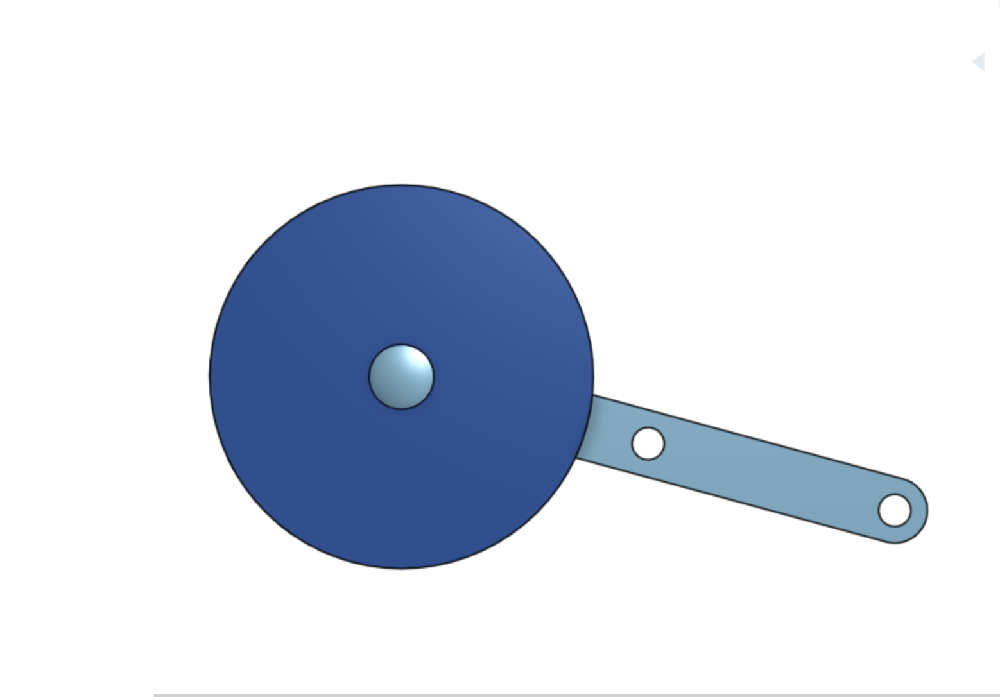
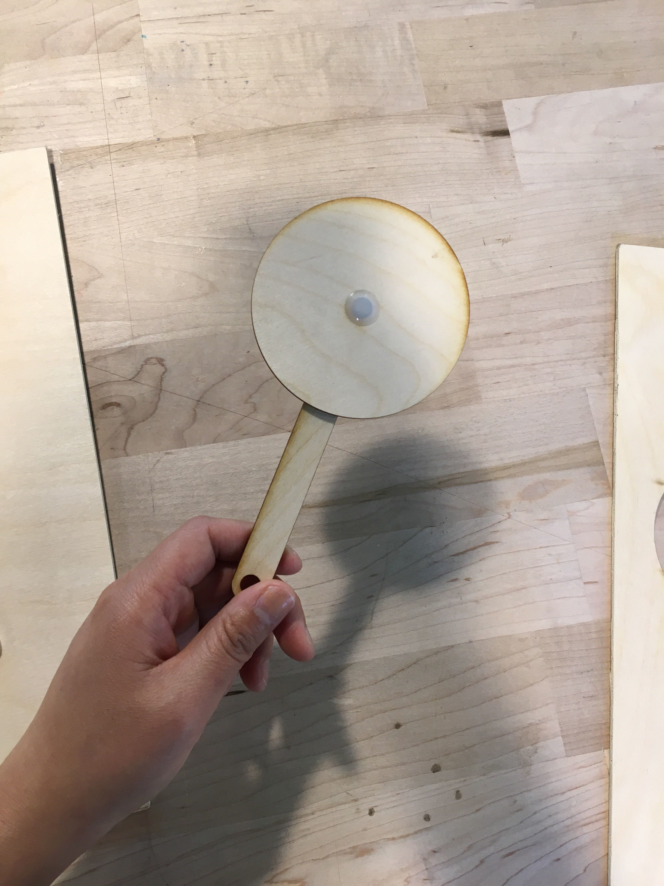
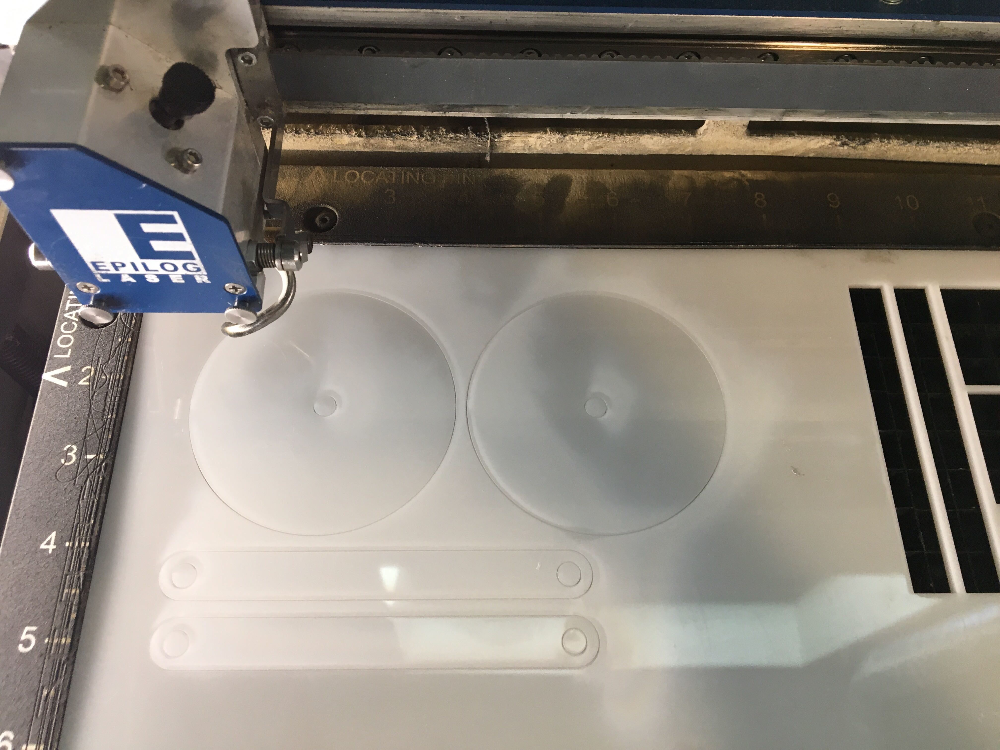

Assignment 4: Moving Parts

This project is a departure from my screen block pattern theme. It was accomplished through designing shapes in OnShape and lasercutting.
Step 1. Planning
Switching to a new tool was very intimidating to me. I decided to create the simplest moving parts assembly that I could think of in order to understand the tool. First, I sketched and extruded a circle in OnShape to create a disc. I copied Joshua's linkage and fastener parts into my design to see if I could recreate how the parts could assemble with my new disc.
I added variables to adjust the diameter of the pin (6.35mm) and depth of the material (3.12mm). Should I decide to work with other materials, the variables will enable me to make easy size adjustments.
The disc has a diameter of 75 mm.


Step 2. Lasercutting
First, I did a test cut of the design on 3mm plywood (Speed 10, Power 100). The cleanly cut pieces assembled easily with plastic fasteners.
Next, I used the lasercutter to cut delrin (Speed 7, Power 100).

Step 3. Assembly
Laser cutting was a success, so assembly was quite easy and satisfying. I connected the discs to the linkages with the plastic fasteners that Joshua provided in class. The enjoyable *snap* from assembling pieces together sparked much joy.
Check out how it swings and spins!

**View the OnShape files for the disc, linkage, and assembly here and the Illustrator file here
Collaborators:
Andrew Waer - Helped tremendously by reviewing OnShape with me. He also gave me plywood to test cut on!
Joshua Vasquez - I used Joshua's linkage part and fasteners in my design. I also used some of his delrin!
Joyce Lu - Helped me with OnShape scaling issues!